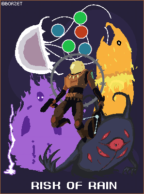

Roguelike video game genre
Roguelike is an exciting video game genre that is popular among gamers. This genre is characterized by procedurally generated levels, constant item collection, and a variety of monsters.
On this website, you will find interesting articles and reviews about roguelikes, and you can learn more about this captivating genre.